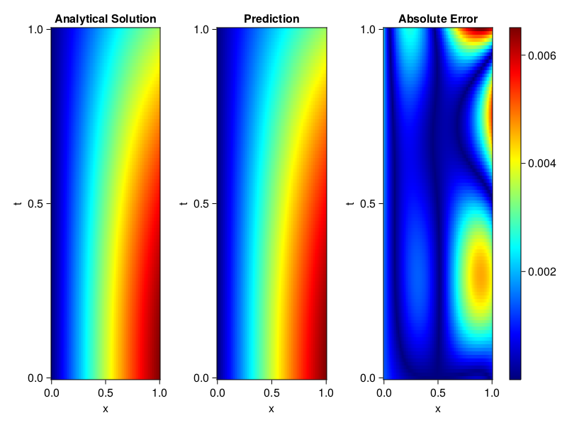
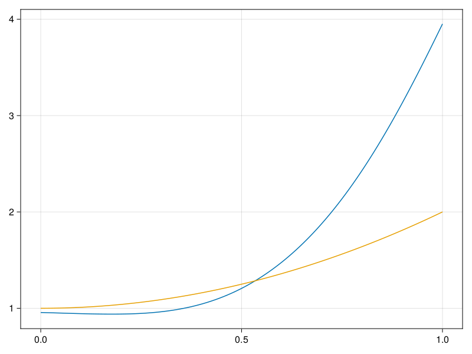

Inverse problem for the wave equation with unknown velocity field
We are going to sovle the wave equation.
using Sophon, ModelingToolkit, IntervalSets
using Optimization, OptimizationOptimJL
@parameters x, t
@variables u(..), c(..)
Dₜ = Differential(t)
Dₜ² = Differential(t)^2
Dₓ² = Differential(x)^2
s(x,t) = abs2(x) * sin(x) * cos(t)
eq = Dₜ²(u(x,t)) ~ c(x) * Dₓ²(u(x,t)) + s(x,t)
bcs = [u(x, 0) ~ sin(x),
Dₜ(u(x, 0)) ~ 0,
u(0, t) ~ 0,
u(1, t) ~ sin(1) * cos(t)]
domains = [t ∈ Interval(0.0, 1.0),
x ∈ Interval(0.0, 1.0)]
@named wave = PDESystem(eq, bcs, domains, [t,x], [u(x,t),c(x)])\[ \begin{align} \frac{\mathrm{d}}{\mathrm{d}t} \frac{\mathrm{d}}{\mathrm{d}t} u\left( x, t \right) =& c\left( x \right) \frac{\mathrm{d}}{\mathrm{d}x} \frac{\mathrm{d}}{\mathrm{d}x} u\left( x, t \right) + \cos\left( t \right) \left|x\right|^{2} \sin\left( x \right) \end{align} \]
Here the velocity field $c(x)$ is unknown, we will approximate it with a neural network.
pinn = PINN(u = FullyConnected((2,16,16,16,1), sin),
c = FullyConnected((1,16,16,1), tanh))
sampler = QuasiRandomSampler(500,100)
strategy = NonAdaptiveTraining(1, (10,10,1,1))NonAdaptiveTraining{Int64, NTuple{4, Int64}}(1, (10, 10, 1, 1))Next we generate some data of $u(x,t)$. Here we place two sensors at $x=0.1$ and $x=0.5$.
ū(x,t) = sin(x) * cos(t)
x_data = hcat(fill(0.1, 1, 50), fill(0.5, 1, 50))
t_data = repeat(range(0.0, 1.0, length = 50),2)'
input_data = [x_data; t_data]
u_data = ū.(x_data, t_data)1×100 Matrix{Float64}:
0.0998334 0.0998126 0.0997503 0.0996464 … 0.275281 0.267213 0.259035Finally we construct the inverse problem and solve it.
additional_loss(phi, θ) = sum(abs2, phi.u(input_data, θ.u) .- u_data)
prob = Sophon.discretize(wave, pinn, sampler, strategy; additional_loss=additional_loss)
@time res = Optimization.solve(prob, BFGS(), maxiters=1000)u: ComponentVector{Float64}(u = (layer_1 = (weight = [1.2030904067600798 -1.132614484747193; 1.0617785359698235 -0.5375152337304036; … ; -1.0040052286065766 1.0621230671325148; -1.1846710729005614 -1.3476465286865908], bias = [0.1710632668068266; 0.08233579216456134; … ; -0.3050725865311693; -0.15772865664110203;;]), layer_2 = (weight = [-0.053852226531090265 -0.2074870827264484 … 0.3710382052597191 0.2757247831283643; -0.42108275122509226 0.15330801118131204 … 0.09009337652016443 0.43476402292674404; … ; 0.09231660505391177 -0.005662933989242871 … -0.31169326699659494 0.03435221500603623; -0.5802499694801537 -0.532167067654174 … -0.3067994434003225 0.19053488615019817], bias = [-0.10488235412023858; 0.020990193966456988; … ; -0.34195145248910436; 0.1797797351302292;;]), layer_3 = (weight = [-0.5582562684635558 0.1884224203816889 … -0.5488069243479958 0.1573212587995328; 0.6947050520702107 -0.5856542307683242 … 0.09146525669937974 -0.12765605370489075; … ; -0.6745276224006586 -0.670822319277771 … -0.40825446246666863 -0.08292205872749078; -0.590845843309533 0.23032916432352313 … 0.10475700819591958 -0.5923700464923131], bias = [0.035789365053818786; -0.09262901371656804; … ; 0.15715800330450436; -0.10984704574233597;;]), layer_4 = (weight = [-0.11553800222600662 -0.19632831967927467 … -0.6286392453753287 -0.1256531918042078], bias = [0.06895639000723822;;])), c = (layer_1 = (weight = [-2.704584804208926; 2.046273412462696; … ; 0.3521092932557798; 0.7051826995028443;;], bias = [0.28452992102721486; -0.4577580526619708; … ; 0.3094999303311203; 0.06084098953288986;;]), layer_2 = (weight = [0.8098367993667928 -0.6227111658059116 … 0.03714432061914657 0.8512039757435661; -0.5758423249789597 -0.052024103573613194 … -0.3976557781204458 -0.20647063189458115; … ; -0.5224296809091062 0.43140129985628684 … 0.17112242389897966 -0.40700696918874896; -0.7273349060831766 0.7179537784138309 … 0.4897343236463714 -0.35238567072479615], bias = [0.4072804605957406; -0.3868643337570587; … ; -0.3687341323275952; 0.07371899113908413;;]), layer_3 = (weight = [1.8173749845407887 -1.0270427292236137 … -0.38698619198423356 -0.02086805383617781], bias = [0.8984451062210957;;])))Let's visualize the predictted solution and inferred velocity
using CairoMakie
ts = range(0, 1; length=100)
xs = range(0, 1; length=100)
u_pred = [pinn.phi.u([x, t], res.u.u)[1] for x in xs, t in ts]
c_pred = [pinn.phi.c([x], res.u.c)[1] for x in xs]
u_true = [ū(x, t) for x in xs, t in ts]
c_true = 1 .+ abs2.(xs) |> vec
axis = (xlabel="x", ylabel="t", title="Analytical Solution")
fig, ax1, hm1 = heatmap(xs, ts, u_true, axis=axis; colormap=:jet)
ax2, hm2= heatmap(fig[1, end+1], xs, ts, u_pred, axis= merge(axis, (;title = "Prediction")); colormap=:jet)
ax3, hm3 = heatmap(fig[1, end+1], xs, ts, abs.(u_true .- u_pred), axis= merge(axis, (;title = "Absolute Error")); colormap=:jet)
Colorbar(fig[:, end+1], hm3)
fig
fig, ax = lines(xs, c_pred)
lines!(ax, xs, c_true)
fig